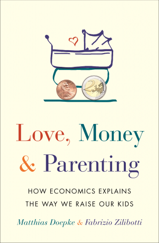

[Home] [Curriculum Vitae]
[Research]
News and Events
New publication: It Takes a Village: The Economics of Parenting with Neighborhood and Peer Effects (with Francesco Agostinelli, Giuseppe Sorrenti, and Fabrizio Zilibotti) is forthcoming in the Journal of Political Economy.
My Plenary Talk at the SED Annual Meeting in Cartagena (slides).
New handbook chapter: The Economics of Fertility: A New Era (with Anne Hannusch, Fabian Kindermann, and Michèle Tertilt).
New handbook chapter: Educational Inequality (with Jo Blanden and Jan Stuhler).
My book with Fabrizio Zilibotti on the economics of parenting
Love, Money, and Parenting: How Economics Explains the Way We Raise
Our Kids has been named a Best Parenting Book of the Decade by Fatherly!
Buy the book on
Amazon. The book has been/is being translated into the following languages: Chinese (simplified), Chinese (traditional),
Japanese, Korean, and Turkish.
I am a Co-Editor of the Journal of the European Economic Association.
Link to Google Scholar profile.
Link to Bluesky profile.
Link to Twitter profile.
Call for Papers, Program,
and Photo
for a conference on
"Families in Macroeconomics," held in Mannheim, Germany October 18-20, 2018.
Call for Papers and Program
for a conference on
"Families and the Macroeconomy," held in Edesheim, Germany on June 22 and 23, 2015. Photos are
here and
here.
Conference Web Site
for Nemmers Prize Conference in honor of Daron Acemoglu, held in Evanston on May 16 and 17, 2013.
Call for Papers and
Conference Web Site
for conference on "Cultural Change and Economic Growth in the Long Run," held at the
University of Munich on July 1 and 2, 2011.
Call for Papers and
Conference Web Site
for the European Workshop in Macroeconomics 2010,
held at the University of Munich on June 25 and 26, 2010.
Conference Program for the conference on
"Asset Markets, Nominal Contracts, and Monetary Policy," held at the University of Munich on
June 24-26, 2009.
Some pictures with coauthors and former students.
Contact Information
Department of Economics

London School of Economics and Political Science
Houghton Street
London WC2A 2AE, United Kingdom
My office is Room 1.18 in SAL (Sir Arthur Lewis Building)
e-mail: M.Doepke@lse.ac.uk
{kind=link}